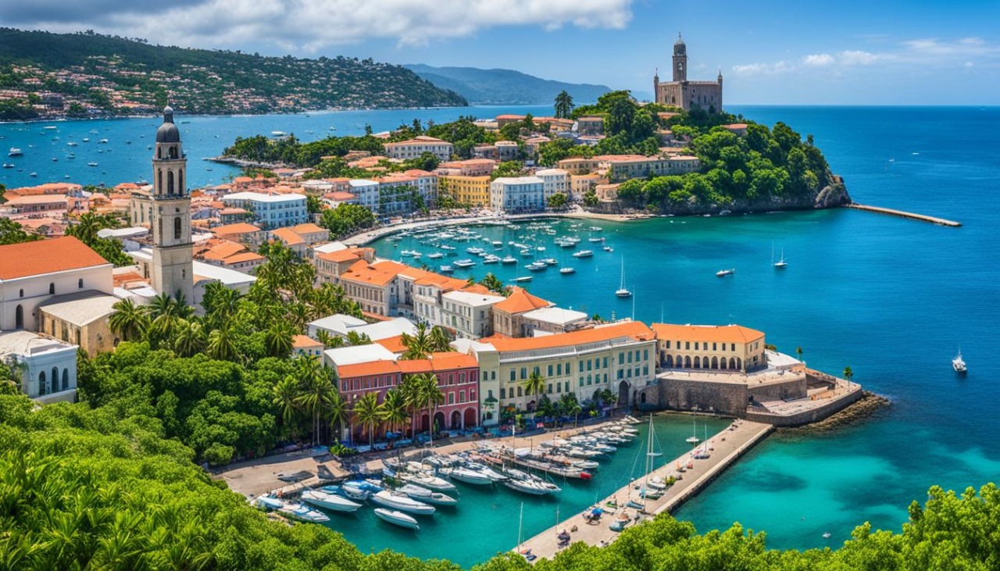

Mangalore-Travel Guide: Best Place to Visit
The majesty of the coast | June 24,2024

Wanderlust Journeys
The majesty of the coast | June 24,2024
Mangaluru, located on the shores of the Arabian Sea in the southwestern state of Karnataka, is a vibrant city with a rich cultural heritage, stunning beaches, and delectable cuisine. Known for its historic temples, bustling markets, and picturesque landscapes, Mangaluru is a hidden gem waiting to be discovered by travellers. Mangaluru boasts a diverse cultural heritage, influenced by centuries of history and trade. The city is home to numerous temples, including the famous Kadri Manjunath Temple, dedicated to Lord Shiva, and the Kudroli Gokarnath Temple, built by the revered social reformer Sri Narayana Guru. Visitors can also explore the historic churches and mosques that reflect the city's multicultural fabric.When in Mangaluru, one must visit the beaches. The city is blessed with some of the most beautiful beaches along the Konkan coast. Popular spots include Panambur Beach, known for its golden sands and water sports activities, and Tannirbhavi Beach, a serene escape from the hustle and bustle of the city. Surfers flock to Sasihithlu Beach for its excellent waves, while Someshwara Beach offers stunning sunset views and a peaceful atmosphere. No visit to Mangaluru is complete without indulging in its mouthwatering cuisine. The city is renowned for its seafood dishes, with delicacies like the local fish curry, crab masala, and prawn ghee roast being local favourites. Vegetarians can savour traditional dishes like neer dosa, kadubu, and goli baje. Don't forget to try Mangaluru's famous desserts, including the irresistible ice cream at Pabbas and the sweet treats at the iconic Ideal Ice Cream Parlour.The ideal time to visit Mangalore is from September to March. During these months, the weather is pleasantly cool, making it perfect for sightseeing and outdoor activities. The monsoon season (June to August) brings heavy rainfall, which can occasionally disrupt travel plans, but it also enhances the greenery and natural beauty of the region. Conversely, the summer months (April to May) can be quite hot, with temperatures often exceeding 35°C (95°F), which may deter some visitors from enjoying outdoor excursions.
Panambur Beach is located at a distance of 13 km from Mangalore to the south of Mangalore port. Every year it is visited by hordes of tourists and locals as it hosts several events like boat racing, kite festival and sand sculptures competitions. Despite a massive footfall, it is one of the cleanest beaches one can come across in the Western coastline of India. The name of the beach has been derived from 'Panam' meaning money and 'ur' meaning place. It is the first beach in the country which is wholly owned by a private enterprise, i.e. the Panambur Beach Tourism Development Project. The motive is to educate the masses about the efficiency of keeping beaches clean. Owing to its excellent maintenance, the Panambur Beach has been awarded the cleanest and best-maintained beaches in India. Moreover, the beautiful beach is open to several events, promotional programmes, weddings, parties, etc. The International Kite Festival is organised every two years at the Panambur Beach which is attended by tourists from all across the country. Also, a carnival of more local kite festivals is held at the beach during the last week of April. The beach is an essential landmark to the location of Mangalore Chemicals and Fertilizers Factory and Kudremukh Iron Ore Factory.
Built in 1068 AD, this temple has the typical Hindu architectural style on the basic Vijaynagri style. It is situated at the base of the Kadri hills, the chief deity being Manjunatha. The temple has many caves around it as it is located on hillocks. These caves have depictions that go back to prehistoric times. Kadri was once the centre of Buddhism. Buddhism declined and the Natha Prantha, a new religion, came to being. They were believers of Lord Shiva and the devotees were called Jogis. The temple was renovated many times and the current structure was done in the 14th century. The temple has an interest connection to Lord Parasurama as well. it is said that Lord Parashurama was asked to find a new abode called Kadrivana for Lord Shiva. Lord Manjunatha with his many wants stayed here, and with the help of Vishwakarma, the temple was constructed here. Behind the temple on the hill is the Kashi Bhageerathi Theerth. It is believed that the water comes from River Bhageerathi in Kashi. As a tradition, devotees visit here before entering the temple.
Ullal beach is a prime tourist attraction in the city. Located in Ullal, a small fishing village only 12 kms away from the city centre of the bustling city of Mangalore, Ullal beach mesmerises its visitors with a panoramic view of a long coastline and the majestic Arabian Sea. The entire coast of the serene Ullal Beach is flanked with tall lush casuarinas and dense palm trees that make it look like a scene from a beautiful painting. In fact, the beach is set in no less than 14-acre casuarina groves! These trees sway in the calming breeze at the beach and instil a sense of tranquillity within you. The waters of the beach are very clean and invite you to take a dip. For the adrenaline junkies, there are arrangements for some water sporting activities that will pump up your blood with energy and are sure to excite you. You can treat yourself to some delicious small eats that are a local favourite. Lounging languorously on the Ullal beach is the perfect way to treat yourself after a long day- soaking in the beauty of the merger of the palm-fringed beach and the azure waters in the gentle breeze will revitalise and refresh you as nothing else will. If you're out on vacation or plan to spend the weekend by the beach, you can explore the nearby attractions like the Someshwara Temple, St. Sebastian’s Church, Queen Abbakka's Fort and the Summer Sands Beach Resort. A trip to the Ullal beach is the ideal relaxation break you need from the monotony and hassles of daily life.
St. Aloysius Chapel, located in Mangalore, India, is a remarkable blend of history, art, and architecture. Built in 1880 and completed in 1885, it is dedicated to St. Aloysius Gonzaga and serves as a significant place of worship for the local Catholic community. The chapel is closely associated with St. Aloysius College, founded by Jesuit missionaries. Its Gothic architectural style features a striking façade, while the interior is adorned with stunning frescoes and murals painted by Father Ruoppolo, an Italian artist, which vividly depict biblical scenes and are an exceptional example of artistic talent in the region. The chapel also boasts beautiful stained glass windows that enhance its serene atmosphere. Perched on a hill, the chapel offers picturesque views of the coastal landscape and is easily accessible from the college. It attracts many visitors, including art enthusiasts and tourists, who come to appreciate its beauty and significance. The Jesuit community diligently maintains the chapel, ensuring the preservation of its heritage. Throughout the year, it hosts various liturgical celebrations and feast days associated with St. Aloysius Gonzaga, making it not only a place of spiritual significance but also a cultural treasure in Mangalore.